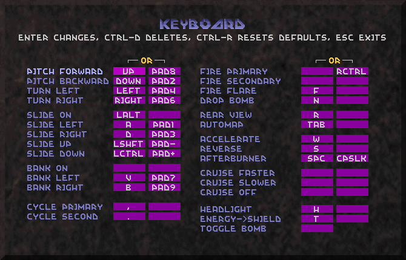
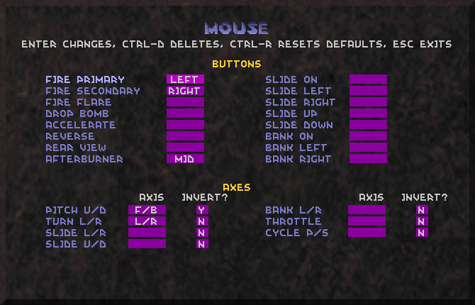

Descent WASD configuration
The following is a WASD mouse configuration. I take a WASD configuration to mean any configuration where W moves forwards, A slides left, S moves backwards, and D slides right, resembling the way the keys are used in first-person shooter (FPS) games. Furthermore, I assume that if the left hand is used for these keys, then the index finger controls D, the middle finger W and S, and the ring finger A – in other words, standard WASD positioning.
Since six degrees of freedom (6DF) means that for all three axises, we can move along them or rotate around them, in both directions (e.g., moving forwards or backwards, banking left or right), there is in Descent a total of 3 × 2 × 2 = 12 basic movements, which are combined in a multitude of ways to maneuver the ship. Four movements are done by W, A, S, and D, and another four may be done by the mouse – i.e., turning (left or right) and pitching (up or down). That leaves the last four movements to be handled by the remaining fingers on the left hand.
What fingers are left? The pinky and the thumb. What movements remain? Vertical sliding and banking. If we use the pinky for the former and the thumb for the latter, then we end up with the following “hand layout”: the middle finger moves forwards and backwards, the index and ring fingers slide horizontally, and the pinky and the thumb do vertical sliding and banking. In other words, the three inner fingers do the “FPS-like” movements of moving forwards, backwards, and to the sides, and the two outer fingers do the “6DF-specific” movements of sliding up or down and banking left or right.
How may this layout be implemented? The way that works best for me is to use Left Shift to slide up, Left Ctrl to slide down, V to bank left, and B to bank right. The advantage of using Shift and Ctrl is that they are modifier keys – that is, they are designed to be used in conjunction with other keys, reducing key conflicts. The configuration also has some intuitiveness to it: Shift (slide up) is above Ctrl (slide down), V (bank left) is to the left of B (bank right), and vice versa.
What about accessory functions? The most important one, the afterburner, may be assigned to the Space Bar – as it’s directly below V and B, the thumb can press it without moving away from the banking keys. As a second option, Caps Lock may be used, vis-à-vis the pinky. Dropping bombs is done with C, as B was overwritten by the thumb’s banking. The rest of the keys are left unchanged from the standard settings.
The changed keys are now as follows:
Slide left: A
Slide right: D
Slide up: Left Shift
Slide down: Left CtrlBank left: V
Bank right: BDrop bomb: C
Accelerate: W
Reverse: S
Afterburner: Space Bar, Caps Lock
Here is a screenshot of the keyboard configuration, as set up in Descent 2:

The mouse, on the other hand, is used as in the standard configuration (i.e., the left mouse button fires primaries and the right button secondaries), with one minor addition: the afterburner is assigned to the middle mouse button. While I have set up keyboard keys for it – the Space Bar and Caps Lock – I prefer to use the mouse hand, taking some of the burden away from a keyboard that is already dealing with moving, sliding, and banking. (Keep in mind that the afterburner is usually employed while doing these basic movements.) Although this obviously won’t work on a two-button mouse, most mouses today do have a middle button in the shape of a pressable scrolling wheel; in other words, the configuration’s “universal compatibility” shouldn’t take too big a hit from this approach.

(You may notice that I have inverted the mouse’s U/D axis – that is, moving the mouse up pitches the ship up rather than down, as is the default. I found that playing other games where the mouse behaved “normally” actually made me a worse Descent player, as I had to readjust to Descent’s inverted scheme afterwards. Evidently, there isn’t room for these two opposite schemes in the same brain – or at the very least, not in my brain – so I’ve set up Descent to align with the other games. For what it’s worth, this is also more “newbie-friendly”.)
With this set-up, I am finally able to triple chord (i.e., moving along three axises at the same time) and bank in all directions simultaneously without encountering any key conflicts. Since it resembles a FPS configuration, Descent-inexperienced friends can also get to grips with it fairly quickly, facilitating evangelizing. Finally, the configuration is probably the most comfortable I’ve used so far – and I am on a laptop as I’m writing this.
So all’s well that ends well, right? Unfortunately, there are a few caveats. The major one, which I discovered just recently, is that there are a few keyboards on which key conflicts are still suffered. I would have thought that my laptop keyboard would be inferior to all stand-alone keyboards in this regard, but strangely, that’s not always the case. I haven’t found a perfect solution to this problem, but using more modifier keys – e.g., Left Alt for banking left and the Space Bar for banking right rather than V and B – improves things. (As this overwrites the primary keyboard key for the afterburner, Caps Lock is provided as a fall-back solution in the case of a two-button mouse.)
Now, when all is said and done, how good is the above configuration? To be sure, the only way to really find out is to play with it over some time and see. However, a “theoretical” examination could be still be of some utility in judging the configuration’s worth. Drawing on arguably the best write-up ever on setting up a Descent configuration, Darktalyn’s Descent 3 configuration article, I have devised a list of the most essential qualities of a “good configuration”. In general, a configuration ought to be
- Versatile: Finding space for the 12 basic movements of 6DF gameplay, in addition to accessory functions (such as the afterburner), is a demanding task – especially when taking the restricting limits of most keyboards into account. At the very least, triple chording is a must, and for mouse players, banking is of particular importance as a complement to the mouse’s slower turning. Versatility is the major challenge in setting up a mouse configuration.
- Comfortable: It goes without saying that the configuration must not strain the hand; an uncomfortable configuration may tire or even harm its user in the long run. Darktalyn acknowledges in his article that comfort is a “major factor”, on a par with the configuration’s versatility; he cites another experienced player as regarding it as “the most important”.
- Adaptable: Related to the above is the degree to which the configuration can be adapted, as no single configuration will work well with all hands. The configuration should have room for small adjustments to accommodate individual variation in finger length and hand size, as well as switching hands. If necessary, the experienced player should be able to tailor the configuration to meet his own, player-specific needs.
- Intuitive: “Newbie-friendliness” matters, even more so in a complicated game like Descent. Ideally, the configuration should from the outset “feel natural” and be easy to get to grips with (some similarities with the keyboard configurations of other games, e.g., a WASD layout, may help in this regard). The less intuitive a configuration is, the more difficult it is to learn, and correspondingly to modify.
- Compatible: The configuration should make as few assumptions about the user’s system as possible, using only standard keys available on all systems and recognized by all Descent versions (and ports thereof). For instance, since most laptops lack a numeric keypad, the configuration should not rely on these keys (but if space allows, they may of course be assigned as secondary choices). The assigning of platform-dependent keys is best left to the end user.
How well does the configuration fare with regard to the criteria above? In the absence of key conflicts, it is remarkably powerful in terms of versatility; all other mouse configurations I have tried have inhibited simultaneous triple chording and banking in one direction or another. If conflicts do occur, then the configuration can still be tweaked to meet the standards of these other configurations. The configuration’s weakest point is of course that it doesn’t work equally well on all keyboards, but in any case it can be made to work fairly well.
While I feel the configuration is easy on my hand, its general comfort is difficult to gauge because people are equipped with different hands; what really matters is the ergonomic adaptability. Holding the “core” keys of W, A, S, and D constant, the other keys may be shifted horizontally or vertically to fit with different pinkies and thumbs: e.g., using Caps Lock and Shift rather than Shift and Ctrl for sliding, or doing banking with Alt and the Space Bar instead of V and B. Taking things further, the “core” keys may also be shifted to the right – in effect yielding an ESDF configuration – while keeping with the basic “hand layout” of the configuration.
The idea of using the inner fingers for “FPS-like” movements and the outer for “6DF-specific” is flexible enough that a left-handed player can well use a “mirror image” of the above set-up, in which the thumb accesses Shift and Ctrl and the pinky controls V and B. On the same note, it provides a fairly uninhibiting starting point for experienced players, who might prefer more “creative” set-ups tailored to their specific needs and styles. The configuration’s adaptability is what to a limited extent weighs up for its keyboard-dependent versatility.
As far as intuitiveness goes, a WASD scheme is probably as “newbie-friendly” as a Descent configuration can get. Before jumping ships in favor of this configuration, I attempted to get by with a mouse-adapted version of Darktalyn’s joystick-based scheme. The problem with that approach was that the configuration didn’t leave much room on the keyboard for banking, for the simple reason that joystick users doesn’t need to use the keyboard as intensively as mouse players do. There is probably a profound advantage to distributing the ship’s movement more evenly over both hands, which is exactly what a joystick with a twist handle facilitates. Mouse players, on the other hand, unfortunately have to make do with a more uneven set-up – possibly risking reaching their keyboard hand’s “neural bandwidth limit”, as it were, during intensive play. (In the end, the joystick is superior.)
Limited banking notwithstanding, my earlier Darktalyn configuration was much better than anything I had used before. It took me a while to get to grips with it, though, as its layout was rather unusual – the middle and ring fingers moved forwards and backwards, while the index finger and the pinky did horizontal and vertical sliding. Consequently, when I eagerly recommended it to a Descent-inexperienced friend, he abandoned it in favor of a standard FPS configuration – hopelessly dependent on the ship’s auto-leveling, since it lacked vertical sliding and banking. While he could draw on his experience from FPS games to develop rudimentary dodging skills, the configuration was inhibiting him from really “playing the game”.
Here I must stress the point that Descent is truly entertaining only when played like a 6DF game; that is, as an ordinary FPS, the game plays poorly. A beginner who sets up a standard FPS configuration, not knowing any better, will miss out on the game’s core qualities and be left with a game experience that’s mediocre at best. Thus it is vital to introduce the inexperienced player to a configuration that is both intuitive and versatile – in effect “unlocking all six degrees of freedom” – so that he has a chance to discover what Descent is really about. (The game’s default configuration doesn’t cut it. The first time I completed Descent: First Strike, on difficulty level Trainee, it was without any sliding whatsoever – yes, it is possible if you reverse a lot – as I was basically clueless about sliding, using only the mouse and the AZ keys instead of the keypad.)
Finally, the point of compatibility gets us back to the configuration’s keyboard-dependent versatility. As far as the keys themselves go, only standard ones are used – with the minor exception of the middle mouse button (which is only a recommendation, not a requirement). When these keys are combined, however, different keyboards respond differently. On the “right” keyboard, the configuration boasts superb versatility for a mouse configuration. In the case of key conflicts, on the other hand, adjustments may be required to bring it up to the level of other configurations. The biggest issue is that these adjustments only improve things – that is, the configuration can be made to work fairly well, but not equally well. Thus it is unfortunately not as “universal” as would be expected of a “good” configuration.
So, to sum up: if you are a mouse player and looking for a better configuration – and if your keyboard is as agreeable as mine, preferably – then I suggest giving the above configuration a try. The basic idea is simple enough: use the mouse and the left hand’s three inner fingers as they would be used in a FPS game, and use the two outer fingers for the remaining “6DF-specific” movements of vertical sliding and banking. To avoid key conflicts, utilize as many modifier keys (Ctrl, Alt, Shift) as possible. The rest is just details.
I conclude this long-winded article with a comment on its longwindedness. While I could have just listed the key assignments and left it at that, I have gone to some lengths to try and describe the considerations behind the configuration’s design. Searching different Descent forums for information about mouse configurations, I have found little debate on the topic, as the general view seems to be that “serious players” use a joystick anyway. (Even Birdseye’s mouse article, sparse as it is, focuses on proving that “the joystick is the ultimate controller”.) There is in my mind a very strong reason for giving more attention to non-joystick configurations: beginners – yes, they still exist even in 2008 – are going to use the keyboard and/or the mouse, and only by making the best out of that situation can we hope to see them stick around long enough to switch to better gear.
I don’t know how many have read this far, but for what it’s worth I invite a debate on the topic of beginners’ configurations. Maybe by attending more to the plights of the newbies, we can offset the decaying trend in the game’s popularity and ease the task of keeping Descent alive.